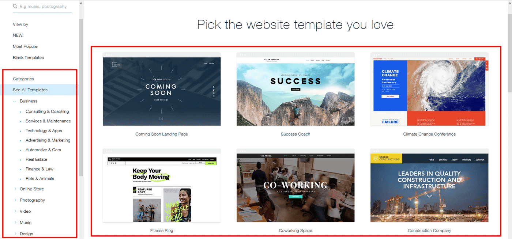

Добре дошли на началната страница
Тук можете да видите всички важни известия и информация.
Тук можете да видите всички важни известия и информация.
В момента сме на Урок 10 "Създаване на уебсайт" Разгледахме в предишните часове платформата "WIX", за какво се ползва и обяснихме някои основни функции. В този час ще направим регистрация в платформата и ще създадем първия ни сайт в нея, като добавим и основните структури. Може да получиш повече информация в раздел "Учебни материали"
Предстои ни в следващите часове да попълнем структурата на сайта си и да направим приятен и адаптивен дизайн за потребителите ни
Информация за дигиталния свят. Бъдете в час с развитието на технологиите и дерзайте!
Сектор “Информационни и комуникационни технологии” ще бъде водещ по приходи в българската икономика след пет години. Прогнозата направи заместник-министърът на икономиката и индустрията Димитър Данчев по време на Годишна церемония по закриването на Стипендиантска програма “Huawei ICT Talents Training Seeds For The Future”.
Научи още...Нова и не толкова позната, но набираща сериозна скорост професия. Това са думите, които човек чува при първия досег с работата на автора на техническа документация (Technical writer). И ако сте склонни веднага да лепнете етикета "скучно", то може би е добре да не прибързвате.
Научи още...Георги Бошев, ученик от XII клас от Гимназията с преподаване на английски език „Гео Милев“ в град Бургас, постигна най-висок резултат на световното състезание за ученици Microsoft Office World Wide Championship 2016, което се проведе в Орландо, Флорида, от 7 до 11 август 2016 г. Той спечели в конкуренция с 400 000 участници от повече от 130 държави.
Научи още...